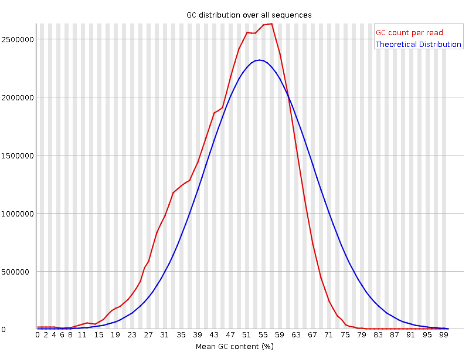
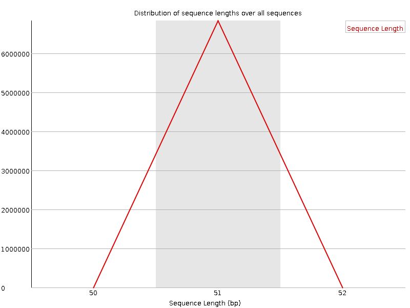

![[OK]](Icons/tick.png) Basic Statistics
Basic Statistics
| Measure | Value |
|---|---|
| Filename | 2013_0001_CAGATC_L001_R1_001.fastq.bz2 |
| File type | Conventional base calls |
| Encoding | Sanger / Illumina 1.9 |
| Total Sequences | 6838184 |
| Filtered Sequences | 0 |
| Sequence length | 51 |
| %GC | 40 |
Per base sequence quality

Per sequence quality scores

![[FAIL]](Icons/error.png) Per base sequence content
Per base sequence content

Per base GC content

Per sequence GC content

Per base N content

Sequence Length Distribution

Sequence Duplication Levels

Overrepresented sequences
| Sequence | Count | Percentage | Possible Source |
|---|---|---|---|
| AACTTTCAACAACGGATCTCTTGGCTCTCGCATCGATGAAGAACGCAGCGA | 1443252 | 21.105778961197885 | Search with Blastall+, more detail First hit on +100 : Hygrocybe nitida isolate DJL05NC65c5 voucher TENN:61894 18S ribosomal RNA gene, partial sequence; internal transcribed spacer 1, 5.8S ribosomal RNA gene, and internal transcribed spacer 2, complete sequence; and large subunit ribosomal RNA gene, partial sequence Evalue=3.87318e-19, Ident=100%, QueryCovergap=0% |
| CAACTTTCAACAACGGATCTCTTGGCTCTCGCATCGATGAAGAACGCAGCG | 395417 | 5.782485525396801 | Search with Blastall+, more detail First hit on +100 : Hygrocybe nitida isolate DJL05NC65c5 voucher TENN:61894 18S ribosomal RNA gene, partial sequence; internal transcribed spacer 1, 5.8S ribosomal RNA gene, and internal transcribed spacer 2, complete sequence; and large subunit ribosomal RNA gene, partial sequence Evalue=3.87318e-19, Ident=100%, QueryCovergap=0% |
| AATGGCTTAAAGGATCCGTAGAATGACATGTAATATAAACATGTAAGAGTT | 106935 | 1.5637923752856022 | Search with Blastall+, more detail First hit on 8 : Issatchenkia orientalis strain NRRL Y-5396 small subunit ribosomal RNA gene, partial sequence; mitochondrial Evalue=3.87318e-19, Ident=100%, QueryCovergap=0% |
| TAATACAACTTTCAACAACGGATCTCTTGGCTCTCGCATCGATGAAGAACG | 73070 | 1.0685585529725437 | Search with Blastall+, more detail First hit on +100 : Gloeodontia sp. LWZ-2012a voucher Dai 12080 internal transcribed spacer 1, partial sequence; 5.8S ribosomal RNA gene, complete sequence; and internal transcribed spacer 2, partial sequence Evalue=3.87318e-19, Ident=100%, QueryCovergap=0% |
| AGATCGGAAGAGCACACGTCTGAACTCCAGTCACCAGATCATCTCGTATGC | 66492 | 0.9723634228034812 | TruSeq Adapter, Index 7 (100% over 50bp) |
| TCTGACCTCAAATCAGGTAGGACTACCCGCTGAACTTAAGCATATCAATAA | 65261 | 0.9543615673401009 | Search with Blastall+, more detail First hit on +100 : Ganoderma lucidum strain 77002 18S ribosomal RNA gene, partial sequence; internal transcribed spacer 1, 5.8S ribosomal RNA gene, and internal transcribed spacer 2, complete sequence; and 28S ribosomal RNA gene, partial sequence Evalue=3.87318e-19, Ident=100%, QueryCovergap=0% |
| TATAGAAGTCTTAACCAAAATTAGTGCCAGCAGTTGCGGCTAAACTAAGGA | 52283 | 0.7645743372801902 | Search with Blastall+, more detail First hit on +100 : Pichia kluyveri strain CBS 7907 mitochondrion, complete genome Evalue=3.87318e-19, Ident=100%, QueryCovergap=0% |
| TAGAAGTCTTAACCAAAATTAGTGCCAGCAGTTGCGGCTAAACTAAGGAGG | 51167 | 0.7482542148617235 | No Hit |
Kmer Content

| Sequence | Count | Obs/Exp Overall | Obs/Exp Max | Max Obs/Exp Position |
|---|---|---|---|---|
| GGCTC | 2465020 | 17.326965 | 514.437 | 23 |
| CTCGC | 2321625 | 16.85571 | 530.9967 | 27 |
| TGGCT | 2619540 | 14.546461 | 406.0737 | 22 |
| CTCTC | 2404245 | 14.243504 | 432.82974 | 25 |
| TCTCG | 2423440 | 13.900087 | 418.55917 | 26 |
| GCTCT | 2409615 | 13.820791 | 419.4777 | 24 |
| CTTGG | 2466735 | 13.697926 | 407.09335 | 20 |
| TTGGC | 2427785 | 13.481634 | 406.5073 | 21 |
| TCTCT | 2534130 | 11.860344 | 342.645 | 17 |
| GCAGC | 2226615 | 11.813418 | 388.54602 | 45 |
| CTCTT | 2497515 | 11.688976 | 342.99817 | 18 |
| CGCAG | 2202295 | 11.684387 | 388.18805 | 44 |
| TCTTG | 2514075 | 11.391834 | 331.6411 | 19 |
| CAGCG | 2125740 | 11.278221 | 388.38452 | 46 |
| CTTTC | 2400355 | 11.234243 | 342.226 | 3 |
| GGATC | 2573210 | 10.78539 | 306.99347 | 14 |
| CATCG | 2459430 | 10.64751 | 316.92673 | 31 |
| CGATG | 2467020 | 10.340304 | 307.0026 | 34 |
| GCATC | 2372400 | 10.270734 | 316.436 | 30 |
| CGCAT | 2342140 | 10.13973 | 316.23984 | 29 |
| TCGCA | 2331950 | 10.095614 | 316.0132 | 28 |
| CGGAT | 2400025 | 10.0595 | 306.60126 | 13 |
![[WARN]](Icons/warning.png) Bad tiles
Bad tiles
| Lane | Cycle | Tile | Median score |
|---|---|---|---|
| 2 | 38 | 2104 | 9.0 |
| 2 | 38 | 2204 | 18.0 |
| 2 | 43 | 2203 | 19.0 |
| 2 | 55 | 2102 | 19.0 |
| 2 | 86 | 2209 | 11.0 |
| 2 | 96 | 2105 | 18.0 |
| 2 | 98 | 2208 | 18.0 |
| 2 | 98 | 2209 | 2.0 |
| 2 | 99 | 2209 | 2.0 |
| 2 | 100 | 2209 | 2.0 |
| 2 | 101 | 2209 | 2.0 |